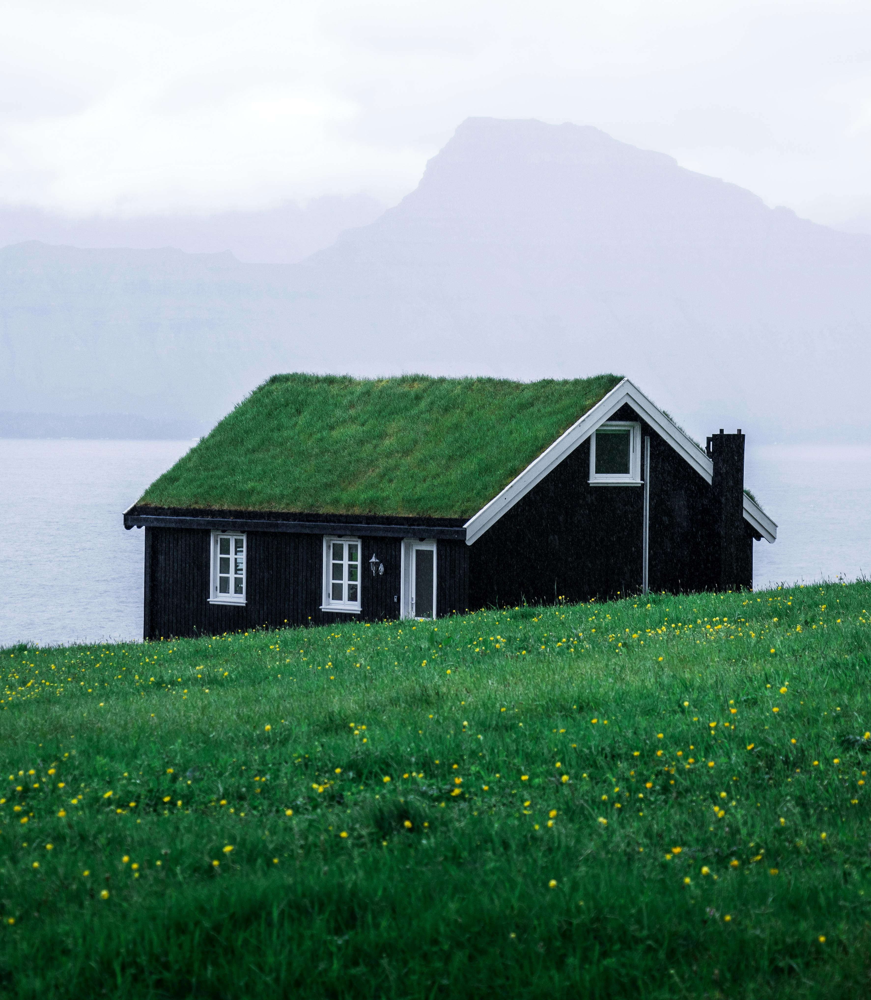

Dreamcatcher
Welcome to Dreamcatcher, a whimsical black cottage nestled amidst a vast, verdant green field. This enchanting property exudes charm and tranquility, offering a serene retreat away from the hustle and bustle of city life.
As you approach Dreamcatcher, you'll be greeted by the picturesque sight of the black cottage standing proudly against the lush backdrop of the expansive green field. The contrast between the deep black exterior and the vibrant green surroundings creates a striking and captivating aesthetic.
Step inside this cozy cottage, and you'll immediately feel its warmth and inviting atmosphere. The interior boasts a rustic yet elegant design, with exposed wooden beams, hardwood floors, and charming details throughout.
The main living area features a comfortable lounge area, perfect for relaxing by the fireplace on cooler evenings or enjoying peaceful moments with a good book. Large windows frame panoramic views of the surrounding countryside, flooding the space with natural light and creating a seamless connection to the outdoors.
Adjacent to the living area is the charming kitchen, outfitted with modern appliances, sleek countertops, and ample cabinet space. Whether you're preparing a hearty meal for family and friends or whipping up a quick snack, this kitchen is sure to inspire your culinary adventures.
Dreamcatcher offers two cozy bedrooms, each providing a tranquil sanctuary for rest and relaxation. The master bedroom boasts its own private ambiance, complete with a cozy fireplace and enchanting views of the surrounding landscape. The second bedroom is equally inviting, offering comfort and serenity for guests or family members.
Outside, the expansive green field surrounding Dreamcatcher offers endless possibilities for outdoor enjoyment. Spend your days exploring the vast expanse of nature, picnicking amidst the wildflowers, or simply basking in the beauty of the countryside.
Additional features of Dreamcatcher include a well-appointed bathroom, a convenient laundry area, and ample storage space for all your belongings.
With its idyllic setting, charming design, and peaceful ambiance, Dreamcatcher is the perfect place to escape the stresses of modern life and reconnect with nature. Don't miss your chance to make this enchanting black cottage your own slice of paradise.
Price: $1,080,108
Contact us today to schedule a viewing and experience the magic of Dreamcatcher firsthand.